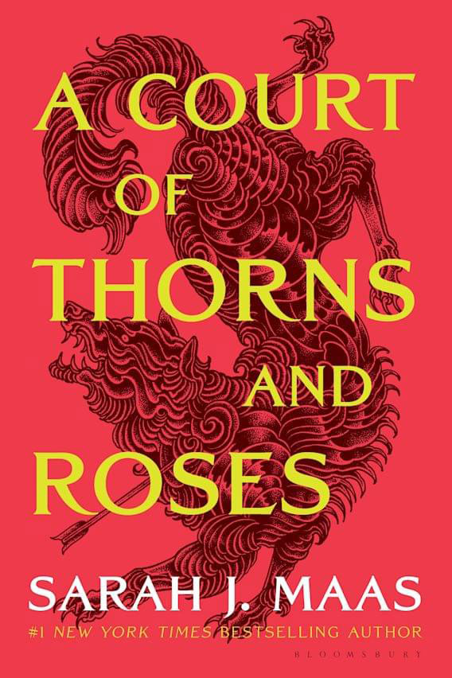
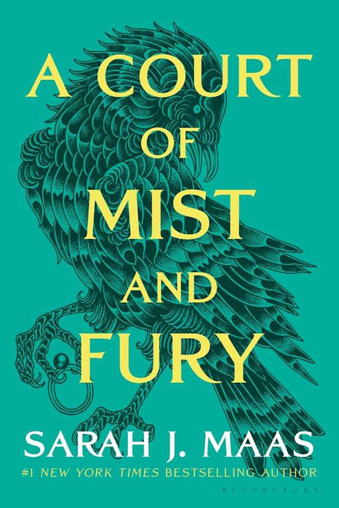
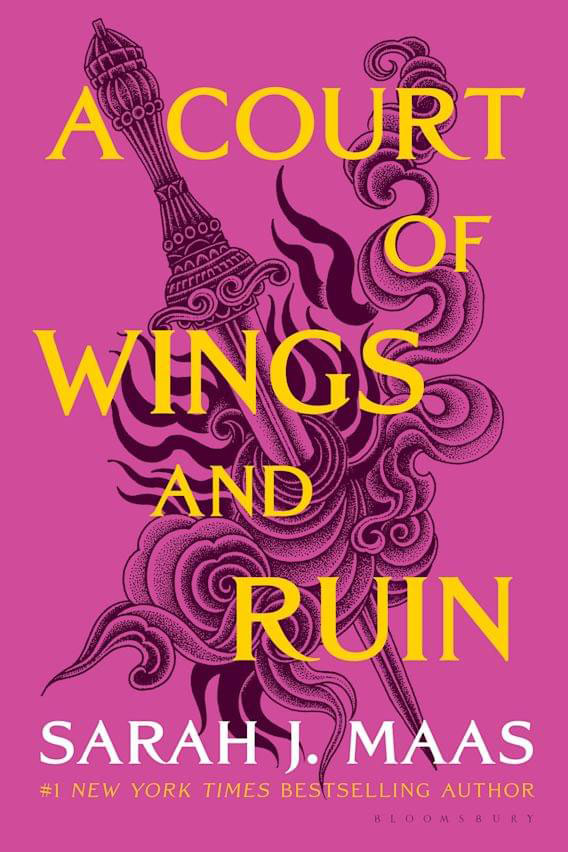
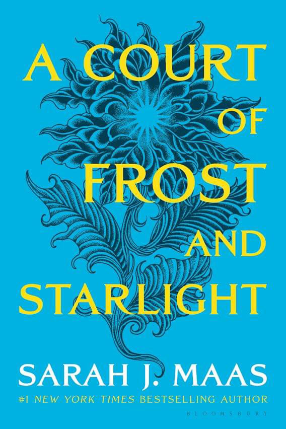
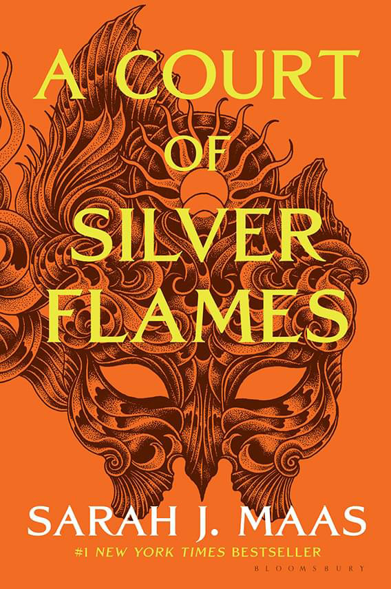

This series is written byt the American author Sarah J. Maas. This series follows a young girl by the name of Feyre Archeron, after she is brought in the fae lands of Prythian.
The first book follows a 19 year old huntress by the name of Feyre Archeron. She kills a wolf in the woods, and then a fae appears demanding retribution. She is then brough to the fae lands of Prythian where she spends her time in the Spring Court. She stays with Tamlin and falls in love with him, but then things take a turn and can she save him and his people in time or is the world doomed?
This is the sequel to Court of Thorns and Roses. In this book Feyre has survived Amarantha and once again has returned to the Spring Court. She is no longer human as she died a human but was given new life as a High Fae. Rhysand, the High Lord of the most feared Night Court reminds her of her bargain with him. Tamlin has changed from what she remembered him to be. Will she be able to harness the power she now has, heal her broken heart and soul, or will everything end up in demise.
This is the 3rd book in the Court series. In this book Feyre once again returns to the Spring Court. Only this time it is hidden that she has been made High Lady of the Night Court. She goes to the Spring Court to gather intel on Tamlin and what he is up too. She needs enough information in order to save the fae lands as well as the mortal lands.
This is the 4th book in the Court series. In this book you see the perspective from both Feyre and Rhysand. It is a bridge of events that take place from A Court of Wings and Ruins and future novels that will be included in the series. Feyre, Rhys and their friends are still busy with rebuilding the Night Court and the world that has changed beyond. They are preparing for Feyre's first Winter Solstice as a High Lady, but can she navigate through old wounds and scars, or fail as High Lady?
This is the 5th book in the Court series. This book is about Nesta Archeron, Feyre's older sister. She became fae due to being forced into a Cauldron against her own will. There only seems to be one person who can ignite her temper the most which is Cassian, the battle=scarred warrior who is in Rhysand and Feyre's inner circle of the Night Court. There is an undeniable fire that burns between Nesta and Cassian. Will their love come out or will their monsters doom them?
